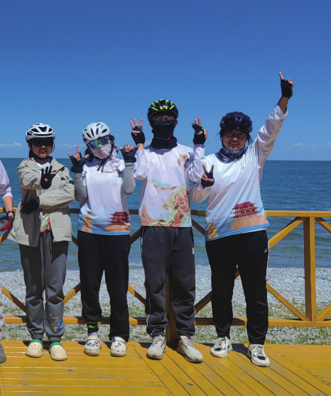
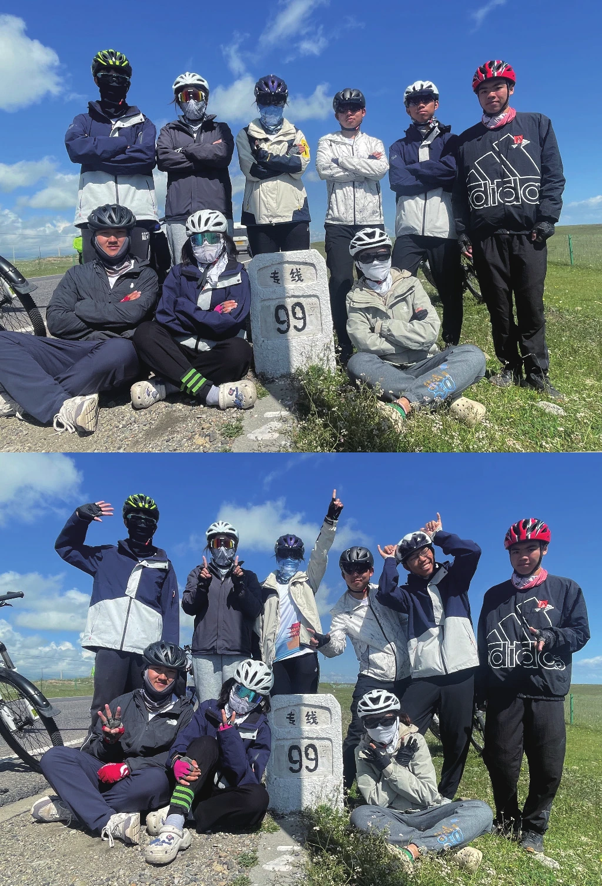

慢慢地迈向听朝
原刊93
到达终点！第一次扛红旗旗最后一段路就像是高考前最后半个月，在不舍得结束高中时代的同时盼着早考完早解放，如今在不舍得结束暑期日子的同时盼着早点骑完这酷暑下的最后八九公里团会解锁金属扒胎棒的新用途：开啤酒瓶子、当勺子挖冰淇淋吃
DAY28 嘉峪关—敦煌（火车）
来到原定的终点呀（才不是因为有冤种买了从这里走的飞机票）排人山人海的景区入口大队，爬走一步陷半步的鸣沙山，逛价格虚高的夜市我的盛夏就要这么结束了呀
闪耀着的回忆，狂奔而逝的白马——
纠结了很久很久，还是没想好要写一些什么东西。暑期带给我的感受太过复杂，以至于凭借笨人浅薄的文化素养很难准确、深刻又不矫揉造作地将那些感受一一描述出来，而简单地写成风景游记又似乎实在敷衍；再加上新建文档的此时此刻，笨人正在被各种 ddl追杀，于是这样一篇不知道能不能过审的、灌满水的文章诞生了。


现在回想暑期，第一时间想起来的不是西安的逆天开局、不是甲乙村的雨骑、不是冷到不行的 4120、也不是嘉峪关的长团会，而是某一个随机的、简单的、不具名的瞬间。我甚至无法准确地说出那是哪一天、哪一段路，可能只是某一天吃完午饭，大家歪七倒八瘫在椅子上午休；或者是某一次放坡，转过弯后突然出现的景色；又或者是骑在青海湖边的时候，突然将发呆中的我唤醒的一阵风。有时候会想路边一块五一斤的西瓜，会想团会上抢着用的筋膜枪，会想骑在前面的人突然回头的场景，会想某个晚上住的那家宾馆，会想休整日去过的各种地方，会想爬坡时五官乱飞的感觉。
我觉得，那些“高光时刻”或者“逆天雨骑”并不是暑期最深刻的部分。最深刻的是我们每一天都在彼此身边，是我们在一起的每一个瞬间。一起开怀大笑也好，一起抢饭吃也好，一起痛苦地爬坡也好，还是那些不愉快也好，都很珍贵，都值得怀念。
每一天，其实我都愿意再过一遍。
那个时候，远方是一个可以被期待的地方。身边是正在和我一起走向远方的人。云从四面八方升了起来，而我正站在苍穹之下。


写到这里其实我就词穷了，毕竟我离开那片自由的天地已经太久，而对于一些时刻，那时的感受于我而言也已经很遥远了。
当我回到学校，面对比大一更加繁重的学业，像是从梦里醒来以后还没有完全回到现实，无法面对而只想要逃避；暑期时感受到的自由让我无法适应医学部的节奏与狭小，对未来的迷茫更让我不知所措。哪怕已经到了开暖气的季节，我还是固执地觉得那个夏天离我并不遥远。那些梦一样的景象反倒成了一种折磨，不断地让我想脱离现实世界。
所以后来我其实很少再想起暑期了，从一种逃避变成了另一种逃避，不再去想青海湖与祁连山，不再去想不够圆满的嘉峪关，也不再想那些懊悔与遗憾。但每一次翻到相册里那时的照片，我还是会怀念，会觉得那个场景离我很近，会想要回到过去把每一秒都记录下来，会说暑期是我最特别最难忘的旅程，也会说我真的很想、很爱我的团众们。
ps：由于本人非常喜欢听陈奕迅，在得知需要取一个正式的标题的时候，想了很久终于想到这句歌词：“慢慢地迈向听朝”，出自一首我非常喜欢的陈奕迅的粤语歌《今天只做一件事》，意思是慢慢地走向明天，而让我非常喜欢这句歌词的原因其实是它后面的词：
“慢慢地迈向听朝，静静地怀念昨日，再决定今天只要相信爱。”